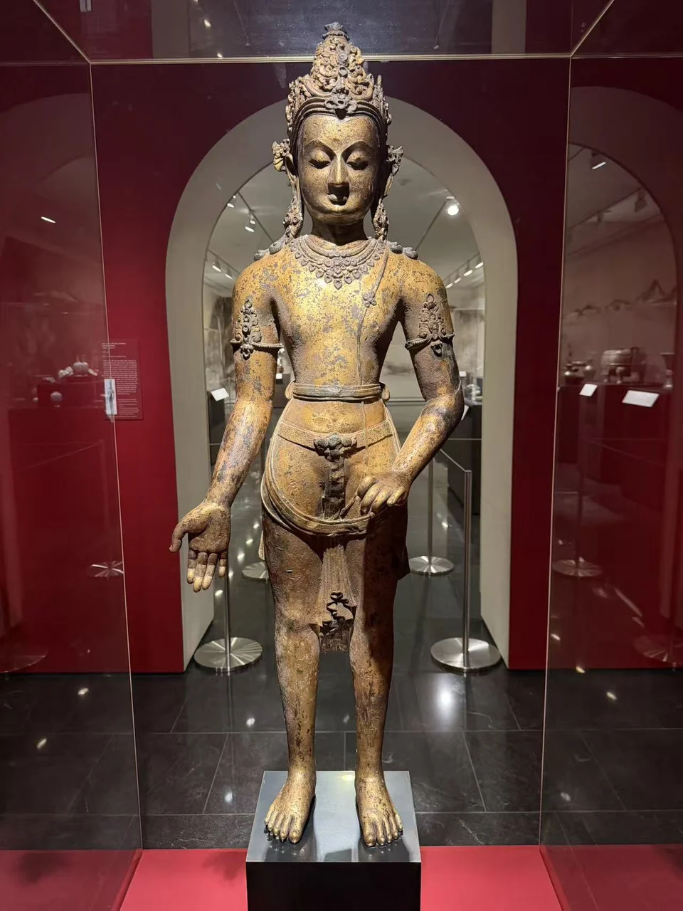
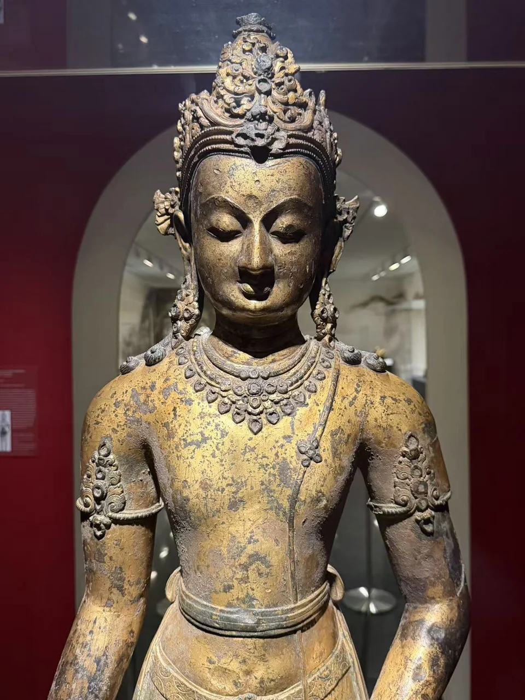
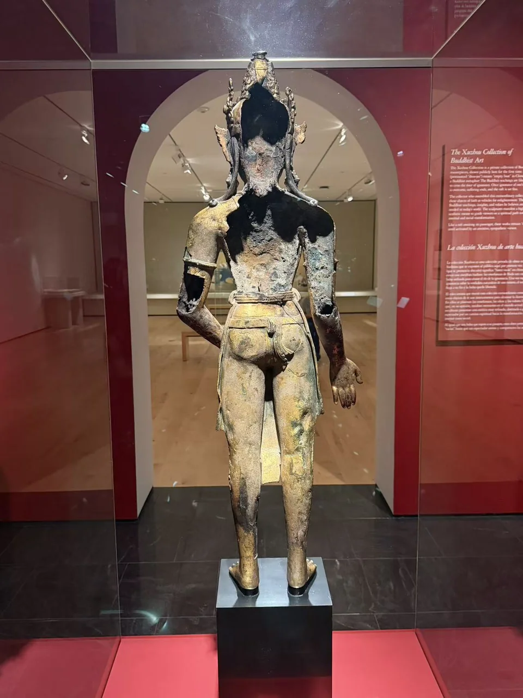
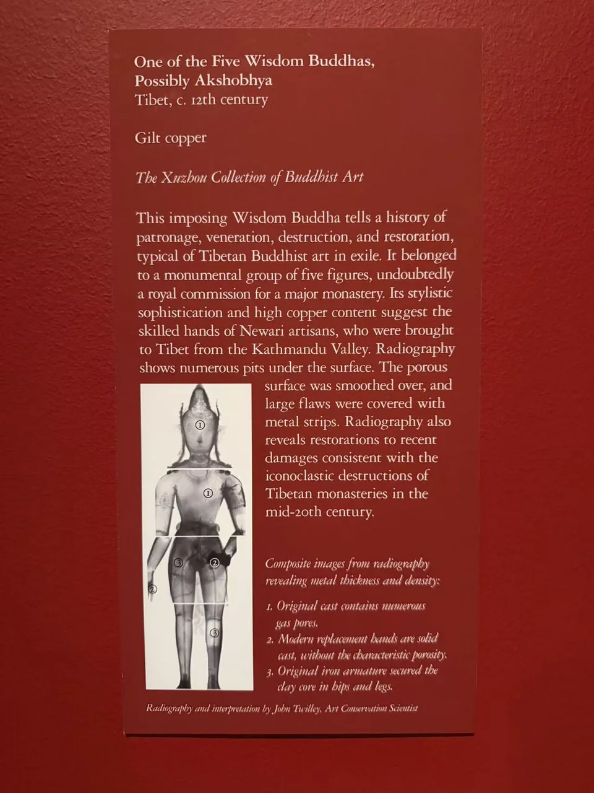

THE XUZHOU COLLECTION
五方佛之一，可能为阿閦佛
One of the Five Wisdom Buddhas, Possibly Akshobhya
从冠饰与面容，绕到残损的背面。
“若人散乱心，乃至以一华，供养于画像，渐见无数佛。”
最初走过这尊立像时，我并没有为它停留很久。后来有一次读到它的身世，再回到展柜前，目光才渐渐停住：先看见冠饰与眉眼，后来留意金色表面下的补片，再绕到背后，看见敞开的像身。此后每次来，便总想再看看它。
它曾承接怎样的目光，又曾在怎样的殿堂里被供奉，如今已难以尽知。留下来的，是鎏金、伤痕，以及仍然安静的面容。我对它的喜欢，也是在这些一次次的重逢中慢慢长出的。有些美，仿佛要等我们走过许多次，才终于愿意向我们显现。


- 地区
- 西藏
- 年代
- 约12世纪
- 材料
- 鎏金铜
- 收藏
- 虚舟收藏（私人收藏）
- 观看地点
- 休斯顿美术馆（MFAH）
- 尺寸
- 123 × 45.7 × 27.9厘米（据收藏图录）
作品札记


高冠、长耳饰与胸前成排的璎珞，把这尊立像的面容围在中央。低垂的双眼、收束的腰身与正直站姿，使繁密装饰有了稳定的中心。金色沿着胸腹展开，腰间束带与下垂衣饰又把目光引向双腿。站在它面前，先看到的是一个仍然完整可辨的身形。
为什么仍要保留“可能”
冠饰和璎珞并不意味着它必然是菩萨。Weldon将本件与另外四尊相似立像联系起来，依据包括站姿、冠饰、项链和腰间束带，并由其他成员保留的姿态线索，提出整组可能为五方佛。本件原右前臂下垂，是推测其为阿閦佛的一条线索；触地印与左手禅定姿态仍属复原解释。原双手已经失去，今天的补配手势不能用来确认佛名。
背面显露的制造过程


再绕到背后，后脑、肩背和上臂的大片缺口显露出中空的内部。金色外表在断裂边缘突然终止，正面看不见的厚薄与起伏也露了出来。正背两面属于同一尊像，却呈现很不一样的制造与保存状态。
Twilley的研究指出，原像以失蜡法铸成：铁骨架支撑泥芯，泥芯外塑蜡层，再包覆外范；蜡排出后，熔融金属进入原先蜡层占据的空间，形成像身。所用原铸金属是高纯度铜。射线下大量气孔说明铸造并非毫无缺陷，外表的平整还依赖浇铸之后的整理。
工匠在有缺陷的区域凿出浅槽，嵌入铜补片并锤击固定；一些大补片边缘另跨接小补片，以加强结合，随后再鎏金。这些修整属于古代制作过程。后来损伤造成部分补片脱落，留下的开口不能一律算作现代修复的痕迹。
今天的面容与手足
原铸铜中的气孔，也为辨认后加部分提供了线索。研究将双手、左足和右足前部辨认为现代黄铜补件：它们的成分和内部气孔特征都与原铸铜不同。这并不意味着整条左腿都是重铸，也不能只凭实心或中空来区分新旧。
面部的情况更细微。Twilley观察到面部整体仍保留原铸铜典型的气孔，面颊还有符合古代铸造阶段的补片，未见手足那样的黄铜替换部分。他认为撞击之后可能有局部表面修补与补金，但没有从后方大规模重塑面部的证据。今天所见，既不是毫无修复的原貌，也不是一张全然重做的脸。
损伤之后留下的形体
背部缺失、边缘变形和肢体弯折记录了严重的外力损伤。Twilley认为，这可能与20世纪西藏的毁像事件、尤其文化大革命时期有关；具体受损时间与地点仍不清楚。站到背后再回到正面，冠饰、面容、断口与补片需要放在一起看，才能理解它怎样成为今天的样子。
原铸铜与现代补件：材料与结构
据Twilley报告，原铸金属约含99.4%铜、0.6%铁，作者称其为未合金化铜。现代手足补件约为91%铜、9%锌，即黄铜。
现代左足为空心补铸，原右足保留部分则是实心。射线图、成分分析和连接方式共同支持本件的新旧区分，不能将“古代中空、现代实心”或气孔多少推广为所有铜像的鉴定规则。
面部修复：条目概述与技术判断
Weldon的Cat.14概述将鼻、唇等列为现代修复部位；Twilley的专门技术研究进一步区分表面修补与金属替换。面部仍有原铸铜的气孔分布，面颊补片也符合原铸阶段特征，未发现类似手足的无气孔黄铜替换部分。
技术研究倾向于撞击损伤后的局部表面修补、补金，没有发现从后方大规模重塑的证据。
David Weldon，Cat.14：“One of the Five Wisdom Buddhas, Possibly Akshobhya”，载《Approaching the Buddha》（2026） ↗ · John Twilley：“From the Twelfth Century to the Present, a Gilded Wisdom Buddha”，载《Approaching the Buddha》（2026），第118页起 ↗
尼瓦尔工匠与风格联系
Weldon还将本件与色拉寺相近时期造像作风格比较，认为腰间束带等细节提示尼瓦尔工匠参与。来自加德满都谷地的工艺传统，有助于理解跨喜马拉雅的艺术联系；本件的工匠姓名、工坊与原寺院仍未确认。
供奉与保存：研究能说明什么
Twilley根据缺乏典型埋藏附着物等现象，倾向于认为本像曾长期作为供奉对象保存，而非久埋地下。这是对保存状态的解释，并没有逐年连续供奉的记录。
研究未检测到明确的仪式残留，同时指出现代清洗可能使相关痕迹流失。现有资料不足以确定具体仪式，也不足以重建藏匿、转移或出藏路线。原寺院、完整递藏链及可确认的拍卖记录仍为空缺。
书目与资料依据
Hao Sheng，《Approaching the Buddha: Transmission and Transformation》，休斯顿美术馆出版、耶鲁大学出版社发行，2026年3月3日，ISBN 9780300286427。身份讨论与尺寸据David Weldon的Cat.14；铸造、材料与修复说明据John Twilley的“From the Twelfth Century to the Present, a Gilded Wisdom Buddha”。
本页根据已阅读图录材料的研究摘要整理。Twilley专文起于第118页，终页尚未核实；未将图录转引的其他书目或私人通信列为直接查阅依据。现场技术展签也署名John Twilley，保留在下方供对照。
David Weldon，Cat.14：“One of the Five Wisdom Buddhas, Possibly Akshobhya”，载《Approaching the Buddha》（2026） ↗ · John Twilley：“From the Twelfth Century to the Present, a Gilded Wisdom Buddha”，载《Approaching the Buddha》（2026），第118页起 ↗
其他角度与细部


现场展签与原始记录


- 题名
- One of the Five Wisdom Buddhas, Possibly Akshobhya
- 地区
- Tibet
- 年代
- c. 12th century
- 材料
- Gilt copper